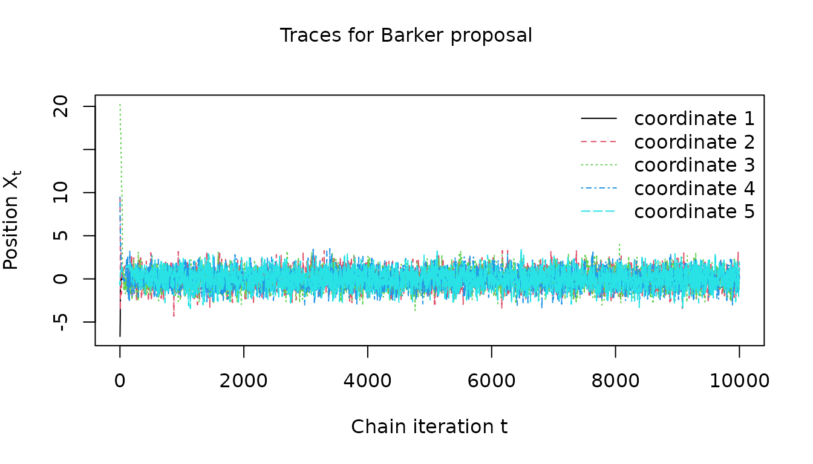

Robust gradient-based MCMC with the Barker proposal
Source:vignettes/barker-proposal.Rmd
barker-proposal.RmdThe rmcmc package provides a general-purpose
implementation of the Barker proposal (Barker 1965), a gradient-based
Markov chain Monte Carlo (MCMC) algorithm inspired by the Barker
accept-reject rule, proposed by Livingstone and
Zanella (2022). This
vignette demonstrates how to use the package to sample Markov chains
from a target distribution of interest, and illustrates the robustness
to tuning that is a key advantage of the Barker proposal compared to
alternatives such as the Metropolis adjusted Langevin algorithm
(MALA).
Example target distribution
As a simple example of a target distribution, we consider a
10-dimensional Gaussian target with heterogeneous scales such that the
standard deviation of the first coordinate is 0.01 and that of other
coordinates is 1. The rmcmc package expects the target
distribution to be specified by a function evaluating the logarithm of
the (potentially unnormalized) probability density at a point, and for
gradient-based methods such as the Barker proposal, additionally
requires specification of a function evaluating the gradient of this log
density function. The two functions should be wrapped in to a list under
the names log_density and gradient_log_density
respectively.
Creating proposal distribution
rmcmc provides implementations of several different
proposal distributions which can be used within a Metropolis–Hastings
based MCMC method:
-
barker_proposal(): The robust gradient-based Barker proposal proposed by Livingstone and Zanella (2022). -
langevin_proposal(): A gradient-based proposal based on a discretization of Langevin dynamics. -
hamiltonian_proposal(): A gradient-based proposal based on a discretization of Hamiltonian dynamics, simulated for a fixed number of integrator steps. With a single integrator step equivalent tolangevin_proposal. -
random_walk_proposal(): A Gaussian random-walk proposal.
Each function takes optional arguments which can be used to customize
the behaviour of the proposal such as the scalar scale of
the proposal, a vector or matrix defining the proposal
shape and routines to sample the auxiliary variables used
in the proposal.
Here we create an instance of the Barker proposal, using the default
values of all arguments. Rather than specifying fixed scale
and shape tuning parameters, in the next section we
illustrate how to set up adaptation of these parameters during a warm-up
stage to the chains.
proposal <- barker_proposal()Setting up adaptation of tuning parameters
rmcmc has support for adaptively tuning parameters of
the proposal distribution. This is mediated by ‘adapter’ objects which
define method for update the parameters of a proposal based on the chain
state and statistics recorded during a chain iteration. Below we
instantiate a list of adapters to (i) adapt the scalar scale of the
proposal distribution to coerce the average acceptance probability of
the chain transitions to a target value, and (ii) adapt the shape of the
proposal distribution with per-coordinate scaling factors based on
estimates on the coordinate-wise variances under the target
distribution.
adapters <- list(
scale_adapter(
algorithm = "stochastic_approximation",
initial_scale = dimension^(-1 / 6),
target_accept_prob = 0.574,
kappa = 0.6
),
shape_adapter(type = "variance", kappa = 0.6)
)Here we set the initial scale to
and the target acceptance probability to 0.574 following the guidelines
in Vogrinc, Livingstone, and Zanella (2023). This is equivalent to
the default behaviour when not specifying the initial_scale
and target_accept_prob arguments, in which case proposal
and dimension dependent values following the guidelines in Vogrinc, Livingstone, and Zanella (2023) will be used. Both
adapters have an optional kappa argument which can be used
to set the decay rate exponent for the adaptation learning rate. We set
this to 0.6, following the recommendation in Livingstone and Zanella (2022), in both cases.
The adapter updates will be applied only during an initial set of ‘warm-up’ chain iterations, with the proposal parameters remaining fixed to their final adapted values during a subsequent set of main chain iterations.
Sampling a chain
To sample a chain we first need to specify the initial chain state.
The rmcmc package encapsulates the chain state in a list
which tracks the current position of the chain, but also additional
quantities such as the auxiliary variables used to generate the proposed
perturbation to the state, and cached values of the log density and its
gradient once computed once at the current position to avoid
re-computation. The [chain_state()] function allows creation of a list
of the required format, with the first (and only required) argument
specifying the position. Alternatively we can directly pass a vector
specifying just the position component of the state to the
initial_state argument of [sample_chain()]. Here we
generate an initial state with position coordinates sampled from a
independent normal distributions with standard deviation 10, following
the example in Livingstone and Zanella (2022). For reproducibility
we also fix the random seed.
set.seed(791285301L)
initial_state <- chain_state(10 * rnorm(dimension))We now have everything needed to sample a Markov chain. To do this we
use the sample_chain function from rmcmc. This
requires us to specify the target distribution, proposal distribution,
initial chain state, number of adaptive warm-up iterations and
non-adaptive main chain iterations and list of adapters to use.
n_warm_up_iteration <- 10000
n_main_iteration <- 10000Here we sample a chain with
warm-up and
main chain iterations. We set trace_warm_up to
TRUE to record statistics during the adaptive warm-up chain
iterations.
barker_results <- sample_chain(
target_distribution = target_distribution,
proposal = proposal,
initial_state = initial_state,
n_warm_up_iteration = n_warm_up_iteration,
n_main_iteration = n_main_iteration,
adapters = adapters,
trace_warm_up = TRUE
)If the progress package is installed a progress bar will
show the chain progress during sampling. The return value of
sample_chains is a list containing fields for accessing the
final chain state (which can be used to start sampling a new chain), any
variables traced during the main chain iterations and any additional
statistics recorded during the main chain iterations. If the
trace_warm_up argument to sample_chains is set
to TRUE as above, then the list returned by
sample_chains will also contain entries
warm_up_traces and warm_up_statistics
corresponding to respectively the variable traces and additional
statistics recorded during the warm-up iterations.
One of the additional statistics recorded is the acceptance
probability for each chain iteration under the name
accept_prob. We can therefore compute the mean acceptance
probability of the main chain iterations as follows:
mean_accept_prob <- mean(barker_results$statistics[, "accept_prob"])
cat(sprintf("Average acceptance probability is %.2f", mean_accept_prob))
#> Average acceptance probability is 0.54This is close to the target acceptance rate of 0.574 indicating the scale adaptation worked as expected.
We can also inspect the shape parameter of the proposal to check the
variance based shape adaptation succeeded. The below snippet extracts
the (first few dimensions of the) adapted shape from the
proposal object and compares to the known true scales
(per-coordinate standard deviations) of the target distribution.
clipped_dimension <- min(5, dimension)
final_shape <- proposal$parameters()$shape
cat(
sprintf("Adapter scale est.: %s", toString(final_shape[1:clipped_dimension])),
sprintf("True target scales: %s", toString(scales[1:clipped_dimension])),
sep = "\n"
)
#> Adapter scale est.: 0.00922080029766185, 0.995077611400515, 0.975164196791254, 0.938742004951002, 0.959131700160353
#> True target scales: 0.01, 1, 1, 1, 1Again adaptation appears to have been successful with the adapted shape close to the true target scales.
Summarizing results using posterior package
The output from sample_chains can also be easily used
with external packages for analyzing MCMC outputs. For example the posterior
package provides implementations of various inference diagnostic and
functions for manipulating, subsetting and summarizing MCMC outputs.
library(posterior)
#> This is posterior version 1.6.0
#>
#> Attaching package: 'posterior'
#> The following objects are masked from 'package:stats':
#>
#> mad, sd, var
#> The following objects are masked from 'package:base':
#>
#> %in%, matchThe traces entry in the returned (list) output from
sample_chain is a matrix with row corresponding to the
chain iterations and (named) columns the traced variables. This matrix
can be directly coerced to the draws data format the
posterior package internally uses to represent chain
outputs, and so can be passed directly to the summarize_draws
function to output a tibble data frame containing a set
of summary statistics and diagnostic measures for each variable.
summarize_draws(barker_results$traces)
#> # A tibble: 11 × 10
#> variable mean median sd mad q5 q95 rhat ess_bulk
#> <chr> <dbl> <dbl> <dbl> <dbl> <dbl> <dbl> <dbl> <dbl>
#> 1 position1 1.63e-4 3.51e-4 0.0102 0.0104 -0.0166 0.0169 1.00 1197.
#> 2 position2 -3.07e-2 -9.21e-3 1.01 0.990 -1.72 1.62 1.00 1405.
#> 3 position3 2.22e-2 1.54e-2 1.01 1.01 -1.61 1.64 1.00 1191.
#> 4 position4 2.13e-2 1.25e-2 1.02 1.04 -1.68 1.68 1.00 1250.
#> 5 position5 1.78e-2 2.02e-2 0.993 1.01 -1.63 1.62 1.00 1370.
#> 6 position6 -2.23e-2 -3.13e-2 1.01 0.996 -1.67 1.65 1.00 1157.
#> 7 position7 2.99e-2 4.19e-3 1.00 1.01 -1.59 1.69 1.00 1456.
#> 8 position8 2.38e-2 -4.45e-3 1.02 1.01 -1.63 1.75 1.00 1503.
#> 9 position9 -3.08e-2 -3.23e-2 1.01 1.02 -1.67 1.62 1.00 1478.
#> 10 position10 2.73e-2 1.43e-2 1.01 1.02 -1.61 1.67 1.00 1482.
#> 11 target_log_de… -5.11e+0 -4.71e+0 2.34 2.17 -9.43 -2.00 1.00 1188.
#> # ℹ 1 more variable: ess_tail <dbl>We can also first explicit convert the traces matrix to
a posterior draws object using the
as_draws_matrix function. This can be passed to the
summary generic function to get an equivalent output
draws <- as_draws_matrix(barker_results$traces)
summary(draws)
#> # A tibble: 11 × 10
#> variable mean median sd mad q5 q95 rhat ess_bulk
#> <chr> <dbl> <dbl> <dbl> <dbl> <dbl> <dbl> <dbl> <dbl>
#> 1 position1 1.63e-4 3.51e-4 0.0102 0.0104 -0.0166 0.0169 1.00 1197.
#> 2 position2 -3.07e-2 -9.21e-3 1.01 0.990 -1.72 1.62 1.00 1405.
#> 3 position3 2.22e-2 1.54e-2 1.01 1.01 -1.61 1.64 1.00 1191.
#> 4 position4 2.13e-2 1.25e-2 1.02 1.04 -1.68 1.68 1.00 1250.
#> 5 position5 1.78e-2 2.02e-2 0.993 1.01 -1.63 1.62 1.00 1370.
#> 6 position6 -2.23e-2 -3.13e-2 1.01 0.996 -1.67 1.65 1.00 1157.
#> 7 position7 2.99e-2 4.19e-3 1.00 1.01 -1.59 1.69 1.00 1456.
#> 8 position8 2.38e-2 -4.45e-3 1.02 1.01 -1.63 1.75 1.00 1503.
#> 9 position9 -3.08e-2 -3.23e-2 1.01 1.02 -1.67 1.62 1.00 1478.
#> 10 position10 2.73e-2 1.43e-2 1.01 1.02 -1.61 1.67 1.00 1482.
#> 11 target_log_de… -5.11e+0 -4.71e+0 2.34 2.17 -9.43 -2.00 1.00 1188.
#> # ℹ 1 more variable: ess_tail <dbl>The draws object can also be manipulated and subsetted with various
functions provided by posterior. For example the extract_variable
function can be used to extract the draws for a specific named
variable. The output from this function can then be passed to the
various diagnostic functions, for example to compute the effective
sample size of the mean of the target_log_density variable
we could do the following
cat(
sprintf(
"Effective sample size of mean(target_log_density) is %.0f",
ess_mean(extract_variable(draws, "target_log_density"))
)
)
#> Effective sample size of mean(target_log_density) is 1206Sampling using a Langevin proposal
To sample a chain using a Langevin proposal, we can simply use
langevin_proposal in place of
baker_proposal.
Here we create a new set of adapters using the default
target_accept_prob argument to scale_adapter
which will set the target acceptance rate to the Langevin proposal
optimal value of 0.574 following the results in Roberts and Rosenthal (2001).
mala_results <- sample_chain(
target_distribution = target_distribution,
proposal = langevin_proposal(),
initial_state = initial_state,
n_warm_up_iteration = n_warm_up_iteration,
n_main_iteration = n_main_iteration,
adapters = list(
scale_adapter(algorithm = "stochastic_approximation", kappa = 0.6),
shape_adapter(type = "variance", kappa = 0.6)
),
trace_warm_up = TRUE
)We can again check the average acceptance rate of the main chain iterations is close to the specified target value:
cat(
sprintf(
"Average acceptance probability is %.2f",
mean(mala_results$statistics[, "accept_prob"])
)
)
#> Average acceptance probability is 0.61and use the ess_mean function from the
posterior package to compute the effective sample size of
the mean of the target_log_density variable
cat(
sprintf(
"Effective sample size of mean(target_log_density) is %.0f",
ess_mean(
extract_variable(
as_draws_matrix(mala_results$traces), "target_log_density"
)
)
)
)
#> Effective sample size of mean(target_log_density) is 2863Comparing adaptation using Barker and Langevin proposal
We can plot how the proposal shape and scale parameters varied during
the adaptive warm-up iterations, by accessing the statistics recorded in
the warm_up_statistics entry in the list returned by
sample_chain.
visualize_scale_adaptation <- function(warm_up_statistics, label) {
n_warm_up_iteration <- nrow(warm_up_statistics)
old_par <- par(mfrow = c(1, 2))
on.exit(par(old_par))
plot(
exp(warm_up_statistics[, "log_scale"]),
type = "l",
xlab = expression(paste("Chain iteration ", t)),
ylab = expression(paste("Scale ", sigma[t]))
)
plot(
cumsum(warm_up_statistics[, "accept_prob"]) / 1:n_warm_up_iteration,
type = "l",
xlab = expression(paste("Chain iteration ", t)),
ylab = expression(paste("Average acceptance rate ", alpha[t])),
ylim = c(0, 1)
)
mtext(
sprintf("Scale adaptation for %s", label),
side = 3, line = -2, outer = TRUE
)
}First considering the scalar scale parameter , which is controlled to achieve a target average acceptance rate, we see that for Barker proposal the adaptation successfully coerces the average acceptance rate to be close to the 0.574 target value and that the scale parameter adaptation has largely stabilized within the first 1000 iterations.
visualize_scale_adaptation(barker_results$warm_up_statistics, "Barker proposal")For the Langevin proposal on the other hand, while the acceptance rate does eventually converge to its target value of 0.574, the convergence is slower and there is more evidence of unstable oscillatory behaviour in the adapted scale.
visualize_scale_adaptation(mala_results$warm_up_statistics, "Langevin proposal")
Now we consider the adaptation of the diagonal shape matrix , based on estimates of the per-coordinate variances.
visualize_shape_adaptation <- function(warm_up_statistics, dimensions, label) {
matplot(
sqrt(warm_up_statistics[, paste0("variance_estimate", dimensions)]),
type = "l",
xlab = expression(paste("Chain iteration ", t)),
ylab = expression(paste("Shape ", diag(Sigma[t]^(1 / 2)))),
log = "y"
)
legend(
"right",
paste0("coordinate ", dimensions),
lty = dimensions,
col = dimensions,
bty = "n"
)
mtext(
sprintf("Shape adaptation for %s", label),
side = 3, line = -2, outer = TRUE
)
}We see that the for the Barker proposal the adaptation quickly converges towards the known heterogeneous scales along the different coordinates.
visualize_shape_adaptation(
barker_results$warm_up_statistics, 1:clipped_dimension, "Barker proposal"
)
For the Langevin proposal, the shape adaptation is again slower.
visualize_shape_adaptation(
mala_results$warm_up_statistics, 1:clipped_dimension, "Langevin proposal"
)
We can also visualize the chain position components during the
warm-up iterations using the warm_up_traces entry.
visualize_traces <- function(traces, dimensions, label) {
matplot(
traces[, paste0("position", dimensions)],
type = "l",
xlab = expression(paste("Chain iteration ", t)),
ylab = expression(paste("Position ", X[t])),
)
legend(
"topright",
paste0("coordinate ", dimensions),
lty = dimensions,
col = dimensions,
bty = "n"
)
mtext(sprintf("Traces for %s", label), side = 3, line = -2, outer = TRUE)
}For the Barker proposal we can see the chain quickly appears to converge to a stationary regime
visualize_traces(
barker_results$warm_up_traces, 1:clipped_dimension, "Barker proposal"
)
The Langevin proposal does also appear to converge to a stationary regime but again convergence is slower
visualize_traces(
mala_results$warm_up_traces, 1:clipped_dimension, "Langevin proposal"
)
Overall we see that while the Langevin proposal is able to achieve a higher sampling efficiency when tuned with appropriate parameters, its performance is more sensitive to the tuning parameter values resulting in less stable and robust adaptive tuning.